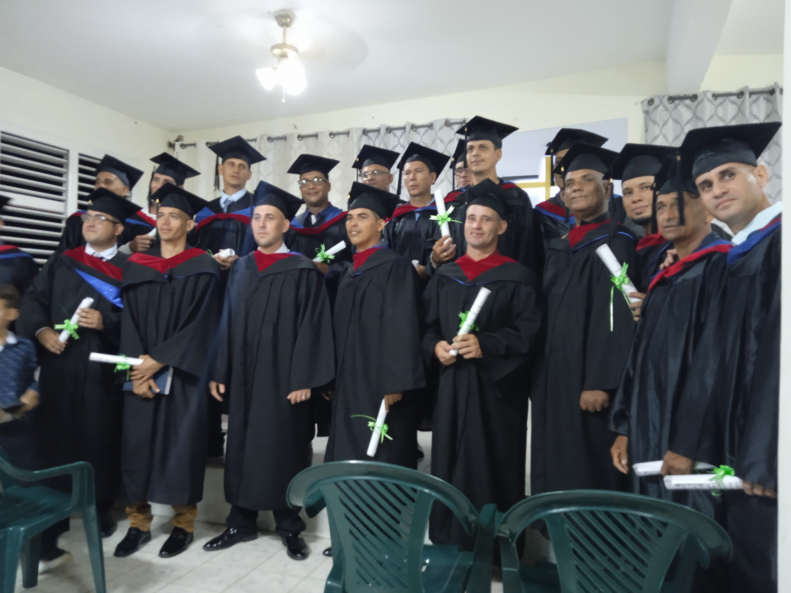
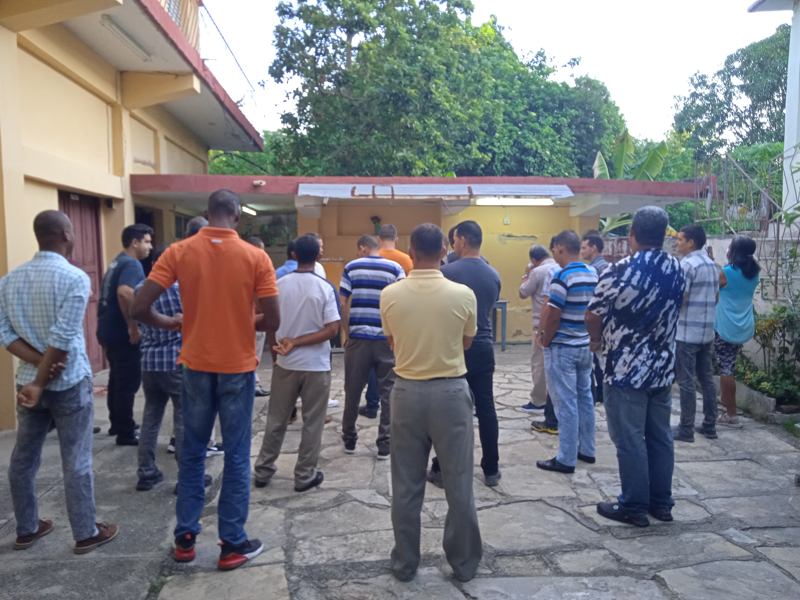
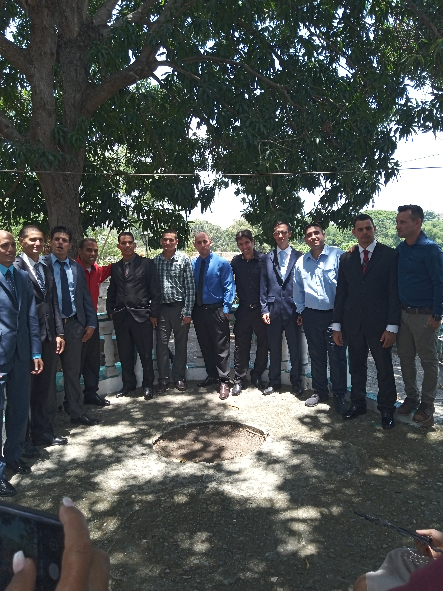

Desde la visión pionera de 1905 hasta el presente en La Caoba, el Seminario Teológico Bautista de Cuba Oriental ha sido un faro de formación bíblica en el corazón de Oriente.
Enmarcado en el km 13½ de la Carretera Central, a 7½ km del Poblado de El Cobre, el Seminario se levanta en una región marcada por el sincretismo religioso y las raíces afrocubanas.
La población que habita los alrededores está fuertemente influenciada por el culto a la Virgen de la Caridad y prácticas sincréticas. Este contexto ha moldeado nuestra misión de formar pastores con una teología autóctona, capaces de contextualizar el Evangelio sin comprometer la verdad bíblica.
El nivel social es de mediano a bajo, con la agricultura y la crianza de animales como principales fuentes de empleo. Es en este entorno donde Dios nos ha llamado a ser sal y luz.
m² de terreno en La Caoba
Capacidad de alojamiento
Años formando líderes
Del 7 al 9 de febrero, en la Asamblea de la Asociación de Iglesias Bautistas de Cuba Oriental, se establece como prioridad la preparación de un Ministerio Doméstico y la creación de una Escuela de Teología por correspondencia.
Alumnos pioneros: Arsenio Fernández Cutiño, Luis F. Chibás Maleta, Elías Cuza Navarro, Orestes Hernández Viera, Félix Romero Rojas, Vicente Bartutis Bartutis y Juan Ortiz Llácer.
El 5 de febrero se inauguran los Colegios Internacionales del Cristo, el plantel de enseñanza superior más prestigioso de la región oriental. En el curso 1909-1910 comienza la Primera Escuela de Teología fundada por misioneros protestantes en Cuba.
Primeros graduados (1912): Maximino Montel Fragosa, Alfredo Santana Bauzá, J. Luis Molina Valdés, Manuel Caballería Galí y José Rodríguez Prianes.
Fundado en Placetas, Santa Clara, por Elmer V. Thompson y B. G. Lavastida. Jóvenes de Cuba Oriental que no podían acceder a los Colegios Internacionales encontraron aquí su formación.
Alumnos orientales destacados: Ramón Fumero Dorta, Delfín Brooks M., Armando Tamayo Leyva, Jesús Soler Chías, Pedro Azahares Gainza, Anastasio Díaz Santos, Celestino González Coca, Elías Castellano Santander.
Los Colegios Internacionales cierran su departamento de teología, creando una crisis en la formación pastoral en Cuba Oriental. La necesidad de un seminario propio se vuelve urgente.
Tres jóvenes bautistas orientales (Marino Santos Martínez, Santiago Entenza Cuellar y Saida Barrios Garriegos) son enviados a Matanzas, pero la distancia y el costo demuestran que esta no era una solución sostenible para Cuba Oriental.
Presentadas por la Comisión Pro-Seminario el 6 de mayo de 1949:
Ver documento originalLiderada por tres valientes hermanas:
Promovieron una ofrenda que consistía en la dedicación de un centavo diario por cada bautista oriental. Esto representaba $3.65 anuales por persona, logrando recaudar aproximadamente $3,000.00 para el sostenimiento del Seminario en sus primeros años.
"Conservador y de mucho énfasis misionero."
Desde los inicios, el Seminario se propuso formar pastores con estas características. Sin embargo, a lo largo de los años, esta visión ha evolucionado hacia una formación integral que abarca:
Desde su fundación, el Seminario ha sido guiado por siervos fieles. Destacamos al Rev. Francisco Obdulio Álvarez Cantillo, quien estudió en "Los Pinos Nuevos" y posteriormente sirvió como Rector-Capellán de nuestra institución.
Rector · Griego I y II
joelgc242@gmail.com


Actas originales y documentos históricos disponibles en el archivo físico del Seminario.
Dios sigue llamando a hombres y mujeres para Su obra. ¿Serás tú parte de la próxima generación de líderes formados en La Caoba?